배기철
Bae Gi-Cheol
Bae Gi-Cheol
늦은 만큼 더욱 열심히!
어제보다 나은 내가 되기위해 노력하겠습니다!!
연락은 언제나 환영합니다!!!
어제보다 나은 내가 되기위해 노력하겠습니다!!
연락은 언제나 환영합니다!!!
| Call : | 010-2275-1623 |
| Address : | 경기도 남양주시 |
| E-mail : | bgc1623@naver.com |
| Github : | https://github.com/Bgicheol |
TIMELINE
SKILLS


PROJECT1
arrow_circle_left
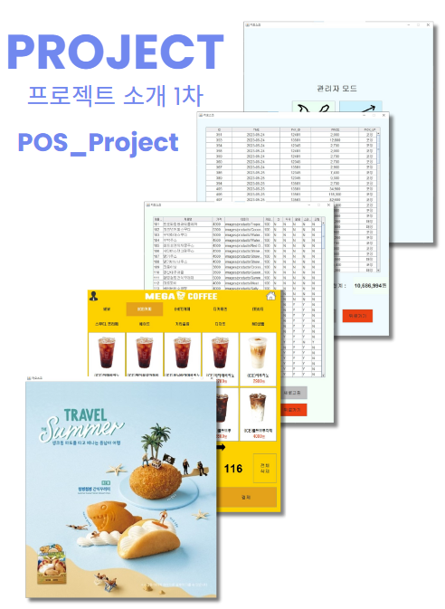
| 개발 기간 | ||
| 2023.05.03 ~ 2023.05.28 | ||
| 개발 인원 | ||
| 4 명 | ||
| 담당파트 | ||
| Oracle DB관리, 관리자 페이지 로그인, 메뉴관리, 음료 추가, 수정, 삭제 |
||
| 개발 환경 | ||
| 언어-Java / | DB-Oracle DB / | IDE-Eclipse |
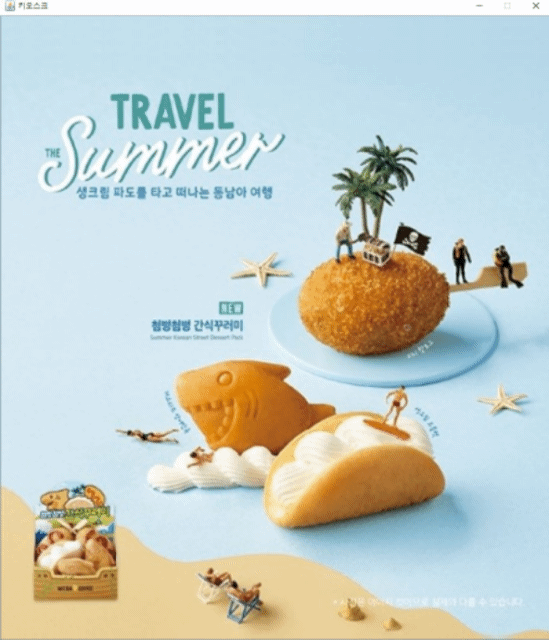
CardLayout을 기반으로
페이지(대기, 메뉴선택, 관리자, 메뉴관리, 판매내역)를 나눴고
JDialog와 modal창을 띄우는 방식으로
추가 진행사항을 표기했습니다.
페이지(대기, 메뉴선택, 관리자, 메뉴관리, 판매내역)를 나눴고
JDialog와 modal창을 띄우는 방식으로
추가 진행사항을 표기했습니다.
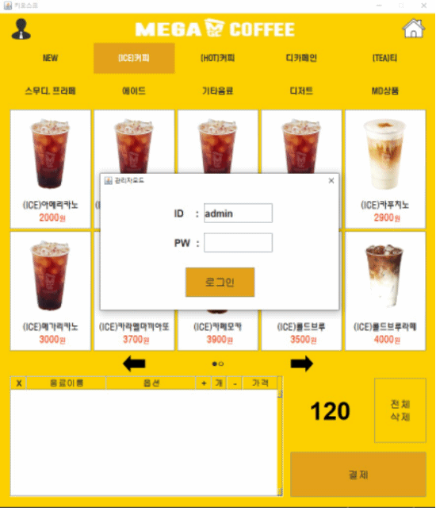
관리자 모드로 메뉴의 추가, 수정, 삭제를 하는
레이아웃과 매출확인을 할 수 있는 레이아웃으로
구분해 작업했습니다.
레이아웃과 매출확인을 할 수 있는 레이아웃으로
구분해 작업했습니다.
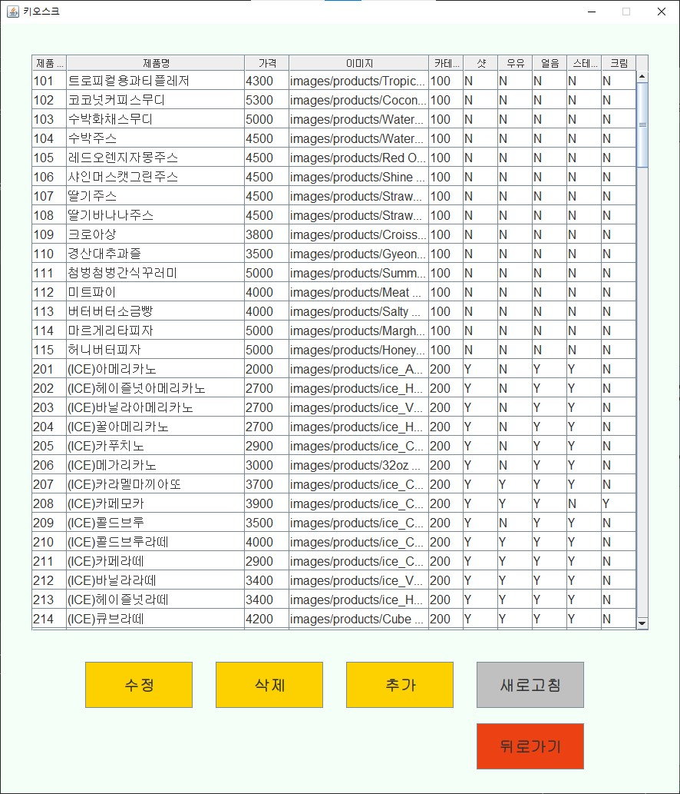
메뉴를 관리할 수 있는 창으로
JTable을 이용해 데이터를 출력했습니다.
테이블의 데이터를 임의로 변경할 수 없도록 설정, 하나의 데이터만 선택되도록 설정했습니다. 수정, 추가, 삭제, 새로고침의 버튼은 각 이름에 맞는 기능이 들어가있습니다.
JTable을 이용해 데이터를 출력했습니다.
테이블의 데이터를 임의로 변경할 수 없도록 설정, 하나의 데이터만 선택되도록 설정했습니다. 수정, 추가, 삭제, 새로고침의 버튼은 각 이름에 맞는 기능이 들어가있습니다.
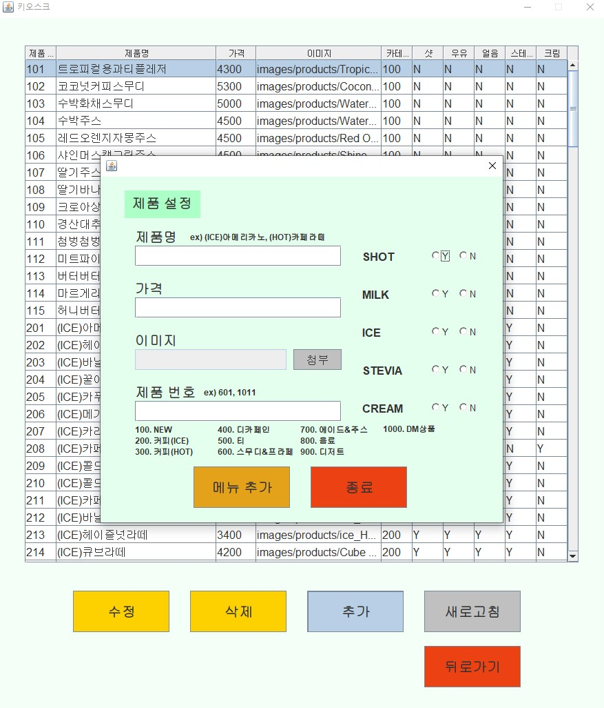
1. 제품 추가창을 기준으로 보여드리는 부분입니다.
2. 하나라도 체크가 안되어 있다면 추가가 안되도록 설정되어있습니다.
3. 메뉴 수정은 각 제품의 row를 더블 클릭하거나
수정 버튼을 이용하면 추가창에 제품의 정보가 입력된 채로 출력되도록 만들었습니다.
4. 종료를 누르면 DB에 반영이 되지 않고, 추가를
눌러야만 commit이 되는 방식입니다. 같은 제품 번호로 수정하거나 제품명이 같다면 추가가 되지 않습니다.
5. 삭제는 modal 경고창이 하나 나오고 확인을
누르면 바로 DB에도 반영되고 테이블이 새로고침 되며 반영됩니다.
2. 하나라도 체크가 안되어 있다면 추가가 안되도록 설정되어있습니다.
3. 메뉴 수정은 각 제품의 row를 더블 클릭하거나
수정 버튼을 이용하면 추가창에 제품의 정보가 입력된 채로 출력되도록 만들었습니다.
4. 종료를 누르면 DB에 반영이 되지 않고, 추가를
눌러야만 commit이 되는 방식입니다. 같은 제품 번호로 수정하거나 제품명이 같다면 추가가 되지 않습니다.
5. 삭제는 modal 경고창이 하나 나오고 확인을
누르면 바로 DB에도 반영되고 테이블이 새로고침 되며 반영됩니다.
arrow_circle_right
PROJECT2
arrow_circle_left
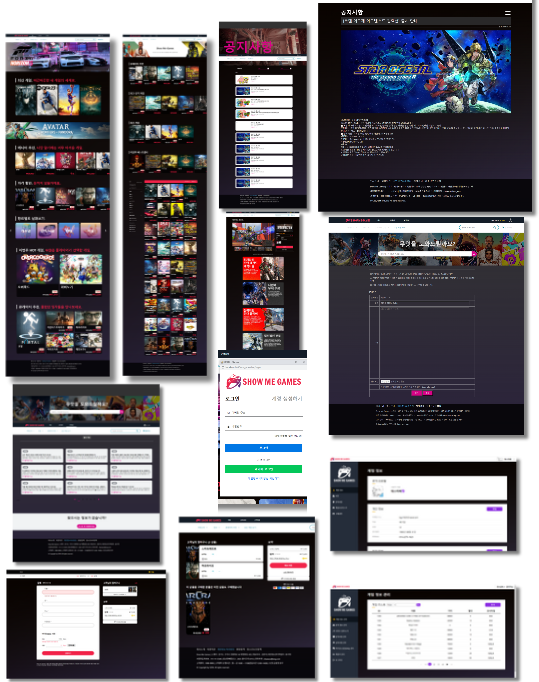
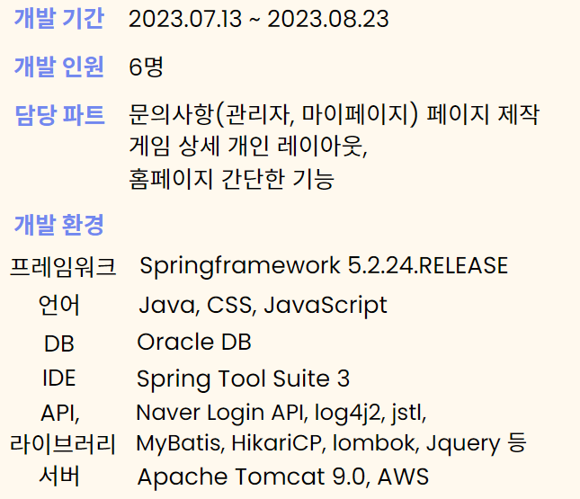
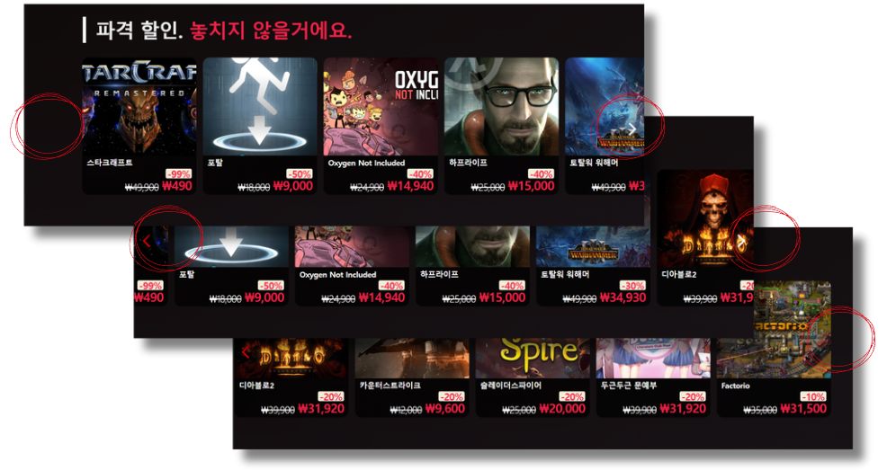
게임을 불러와 카드로 출력해 보여주는 부분으로
중복되는 스크롤링 버튼기능 제작 양끝으로 버튼이
도달하면 버튼은 사라지게 됨 기능은 스크롤을
이동시켜주는 방식으로 제작함.
만들면서 카드를 바꿔주는 방식보다는 슬라이드해주는 방식을 선택하였기에 스크롤 방식을 선택, 제작하였습니다. 버튼을 중복으로 누를 수 있는 부분은 팀원과의 회의를 통해 버튼에 타이머를 주어 클릭 가능, 불가능 옵션을 설정해 해결하였습니다.
중복되는 스크롤링 버튼기능 제작 양끝으로 버튼이
도달하면 버튼은 사라지게 됨 기능은 스크롤을
이동시켜주는 방식으로 제작함.
만들면서 카드를 바꿔주는 방식보다는 슬라이드해주는 방식을 선택하였기에 스크롤 방식을 선택, 제작하였습니다. 버튼을 중복으로 누를 수 있는 부분은 팀원과의 회의를 통해 버튼에 타이머를 주어 클릭 가능, 불가능 옵션을 설정해 해결하였습니다.
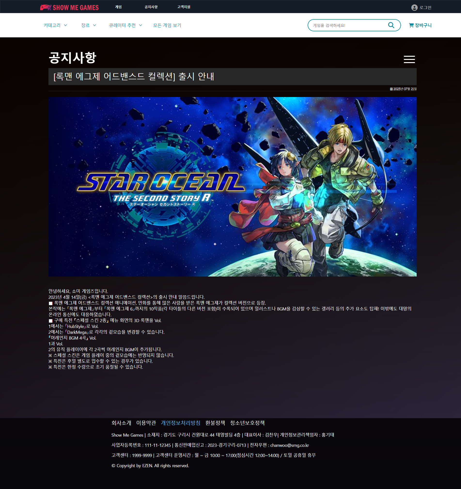
DB에는 한 컬럼 내에 공지사항 내용이 들어가있고 따로 br이 삽입되어 있지 못해
불러올때 .을 기준으로 split한 뒤에 .br을 join시켜 출력해주는 방식을 선택했습니다.
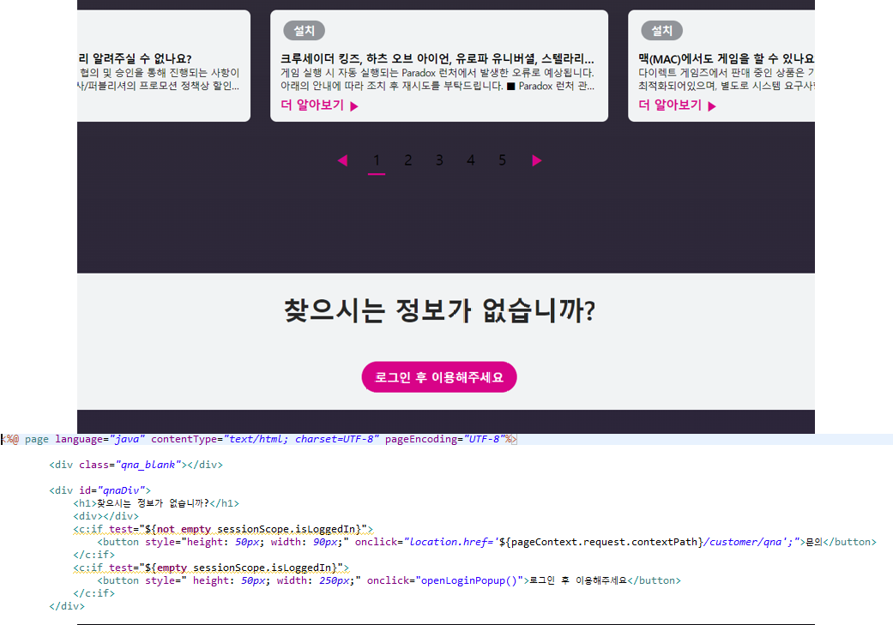
sessionScope를 이용해 login이 되어있는지 확인하고
되어있다면 문의하기 버튼이 보이고
안되어 있다면 로그인 창이 팝업되는 버튼이 나옵니다.
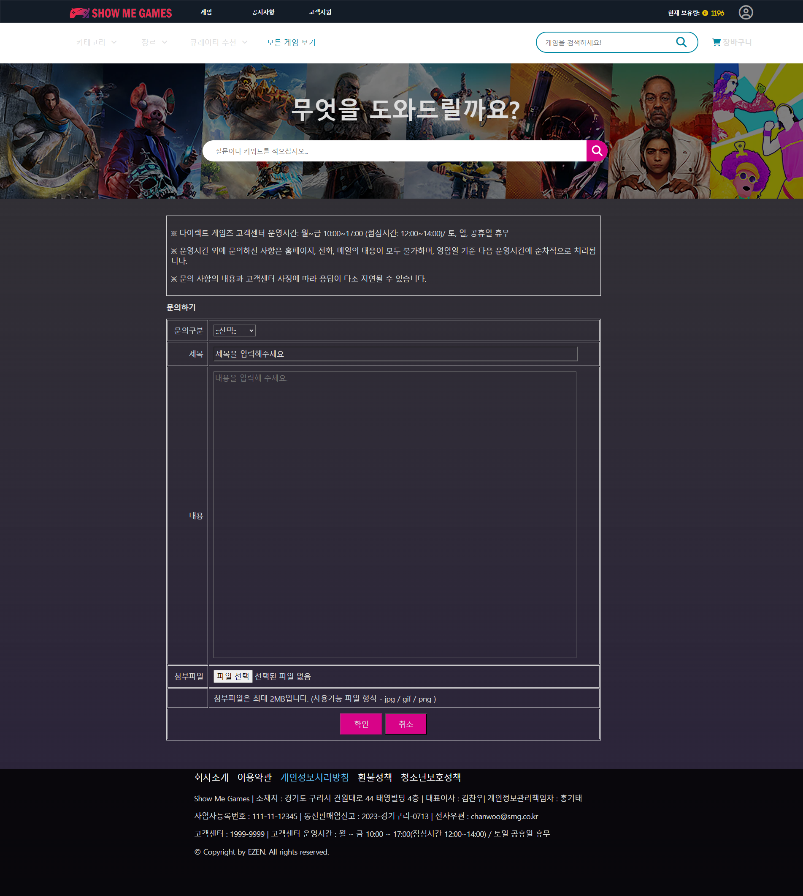
문의를 할 수 있도록 제작한 페이지로 각 문의 정보를 입력할 수 있는 테이블입니다.
처음 제작했을 때 데이터를 입력하지 않아도 문의가 되는 에러가 발생해
이미지를 제외한 모든 데이터가 입력이 되지 않는다면
확인 버튼이 활성화 되지 않도록 했습니다.
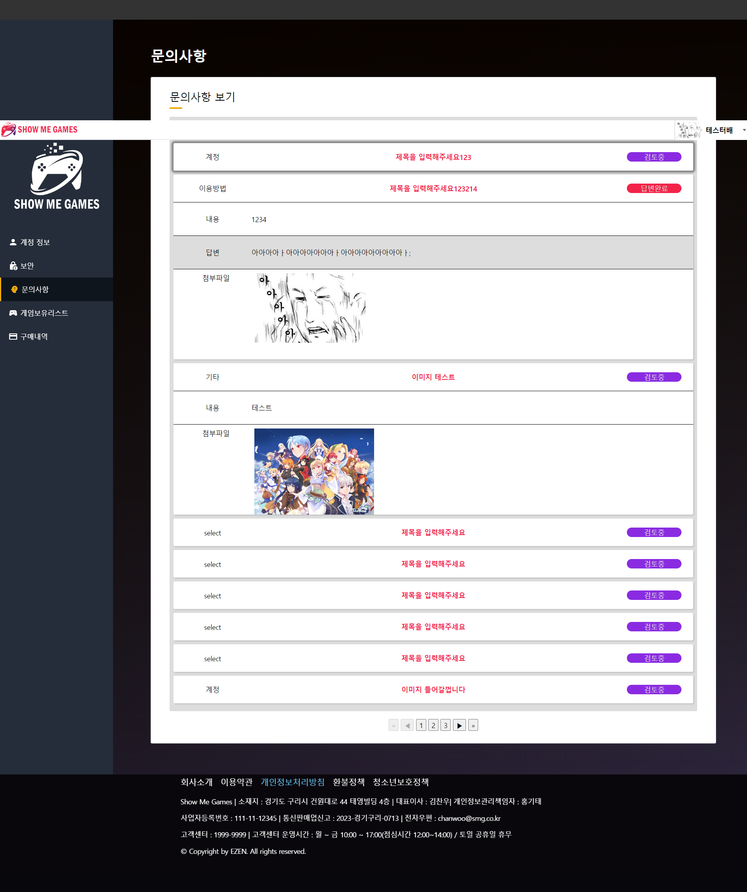
문의를 확인 할 수 있는 mypage로 답변이 되어있다면 우측 알림창이 변하게 설계했습니다.
다른 페이지로 넘어가는 것이 아닌 슬라이드가 내려오면 바로 확인이 가능하도록 제작했습니다.
문의 수정 기능은 따로 넣을 필요성을 느끼지 못해 넣지 않았습니다.
슬라이드는 togglClass를 사용했습니다.
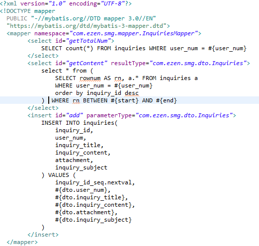
DB에서 데이터를 가져올 때 최신 순으로 가져오기 위한 mapper입니다.
역순 정렬 후 한 페이지에 10개씩 출력하기 위해 start와 end가 있습니다.
최신 순으로 정렬하기 위함입니다.
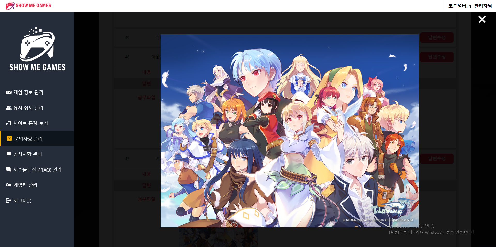
img를 클릭하면 모달창이 나와 이미지를 확대해 줍니다.
이 부분은 w3 홈페이지를 참고했습니다.
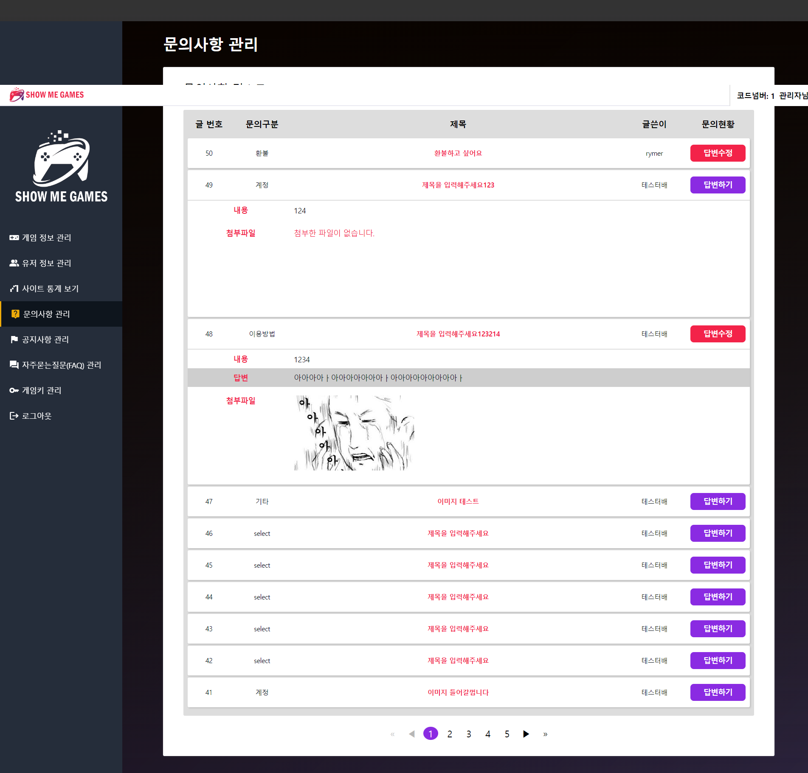
이 부분은 관리자 페이지의 문의사항 관리페이지로
이전 마이페이지와 비슷하게 제작되었습니다.
마이페이지와 다른 부분이 있다면 글쓴이를 알 수 있고,
답변하기, 답변 수정하기가 가능하다는 점이 다릅니다.
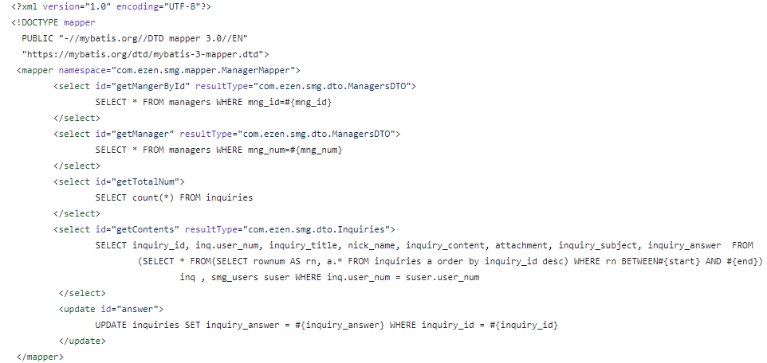
여기 또한 최신 순으로 정렬을 하기 위한 쿼리를 작성했지만
글쓴이를 불러오기 위해서는 user_id를 사용해 smg_user테이블의 nick_name을 불러와야 했기에
join을 하는 과정을 추가해 작성했습니다.

문의를 클릭한 뒤에 답변하기를 누르면 답변을 할 수 있는 textarea가 나옵니다.
작성 후 확인을 누르면 바로 적용되도록 했습니다.
이미 작성이 되어있는 테이블이기 때문에 UPDATE 쿼리를 사용했습니다.
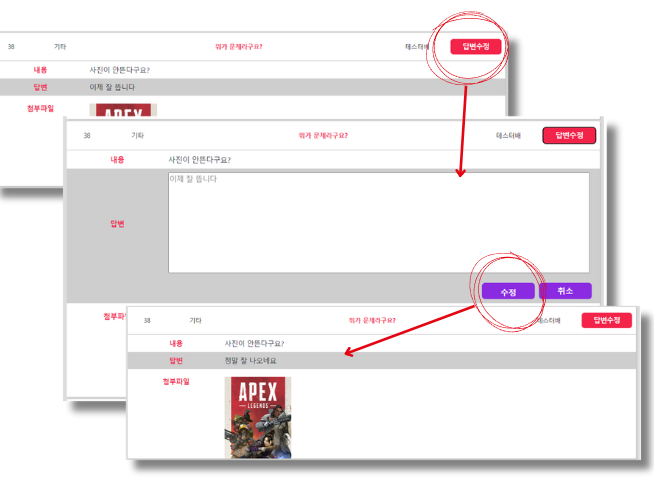
수정하기는 답변을 한 글에서만 활성화가 되는 버튼으로
버튼을 누르게 되면 답변하기와 마찬가지로 textarea가 출력이 되지만
textarea내부에는 작성했던 답변이 입력되어 있는 채로 활성화됩니다.
확인을 누르면 마찬가지로 바로 적용되도록 했습니다.
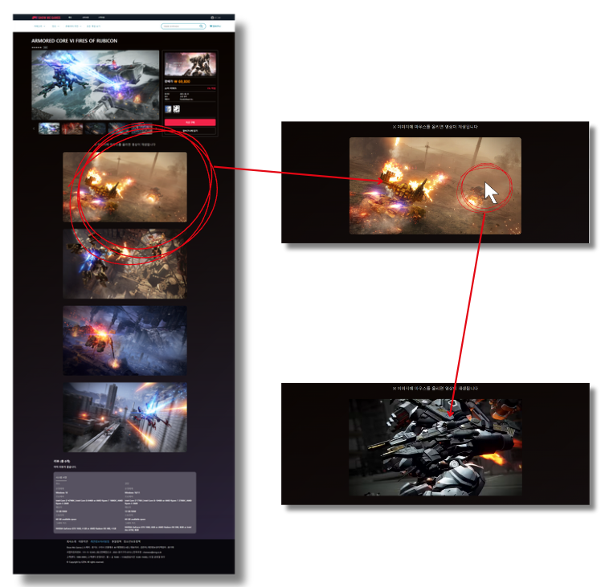
여기선 div를 겹쳐서 이미지를 hover시 앞에 있는 div가 숨겨지며
뒤에 멈춰있던 영상이 재생이 되도록 설계했습니다.
youtube를 사용을 할까 싶기도 했지만 그래도 바로 재생되는게
더 이뻐보여서 이렇게 진행했습니다.
나중에 배포를 해야한다면 그땐 데이터 낭비가 있을 것 같아
youtube를 사용하지 않을까 싶습니다.
arrow_circle_right